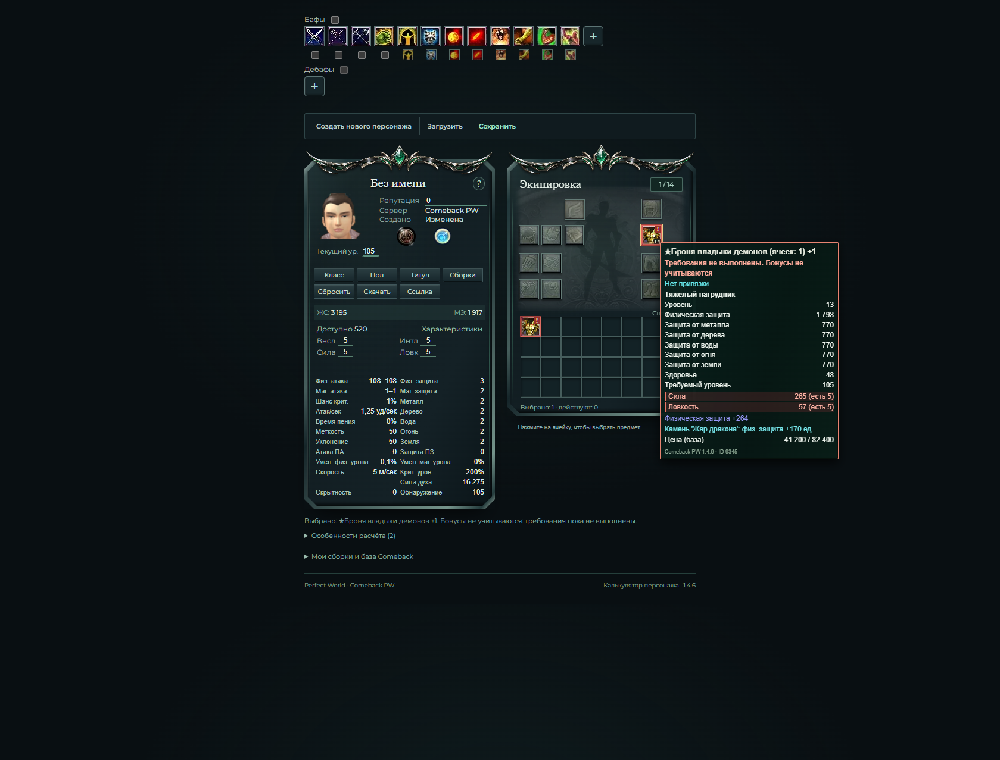
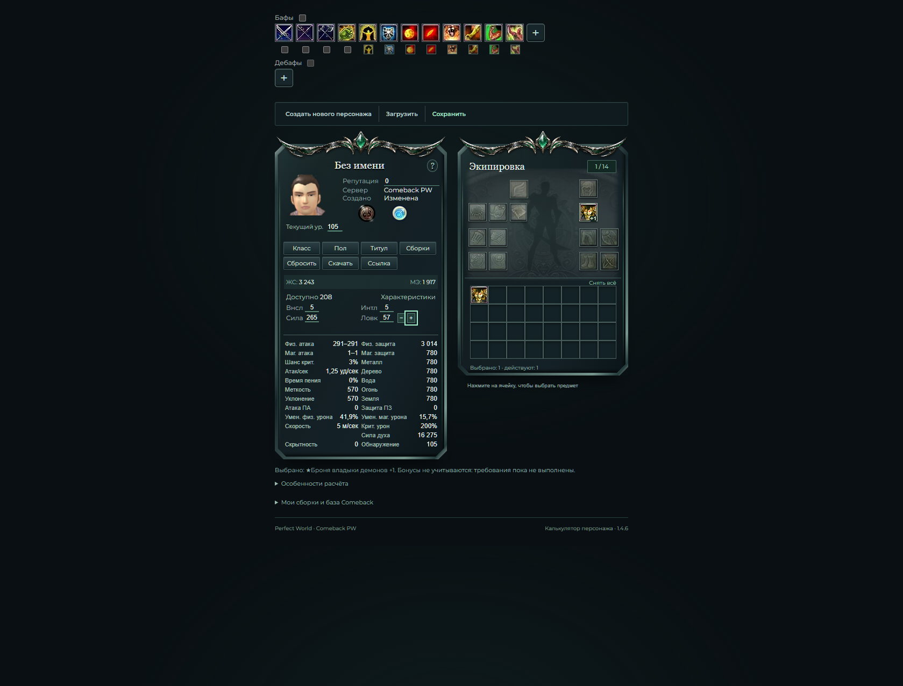
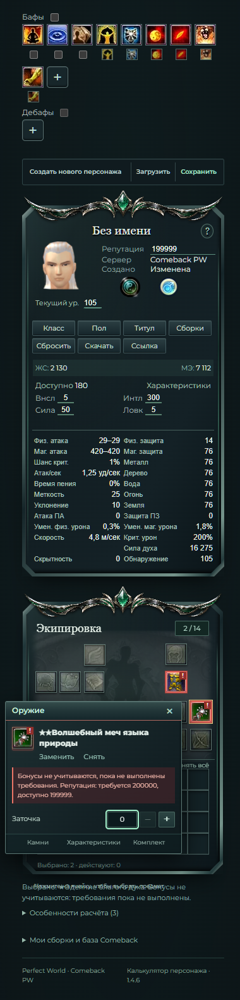

Бонусы экипировки по требованиям
В калькуляторе Comeback PW 1.4.6 вещь можно выбрать заранее. До выполнения её требований красная вещь остаётся в сборке, а её характеристики, заточка, камни и свойства не повышают показатели персонажа.
CSV с теми же результатами · Актуальное поведение · Предыдущая проверка планирования
Уточнение пользователя: физическая и магическая защита, здоровье и остальные бонусы вещи не должны повышаться до выполнения её требований. Выбор остаётся доступным, красная индикация показывает отключённые бонусы. Требования проверяются без собственного бонуса предмета и с поддержкой только действующих вещей.
PASS — результат фактически запущенной проверки. Все перечисленные проверки завершены. Высокая важность относится к расчёту, средняя — к совместимости и дополнительным сценариям.
Результаты
| Область | Статус | Важность | Что проверено | Ограничения |
|---|---|---|---|---|
| Выбор вещи | PASS | Высокая | Броня 9345 выбирается на порту 8000 при атрибутах по 5 и репутации 0. Вещь остаётся в ячейке с красным предупреждением. | Выбор разрешён заранее; выполнение требований определяет действие бонусов. |
| Показатели красной вещи | PASS | Высокая | После выбора брони 9345 все показатели, здоровье и мана точно совпадают с персонажем без экипировки: физзащита 3, магзащита 2, HP 3195, MP 1917. | Подтверждено основным исполнителем в браузере на текущем приложении. |
| Заточка, камень и свойство | PASS | Высокая | У красной брони заточка +1, камень 2000 и свойство «Физическая защита +264» не меняют показатели персонажа. | Их бонусы не действуют, пока не выполнены требования самой вещи. |
| Выполнение требований | PASS | Высокая | При Силе 265 и Ловкости 57 выбранная броня включается автоматически: HP 3243, физзащита 3014, магзащита 780; выбрано 1, действует 1. | Проверено на той же вещи с заточкой, камнем и выбранным свойством. |
| Возврат ниже требования | PASS | Высокая | Снижение Силы до 264 отключает бонусы брони: HP 3195, физзащита 68; выбрано 1, действует 0. Вещь сохраняется в ячейке. | Физзащита 68 включает собственную защиту персонажа от распределённой Силы; это не бонус красной брони. |
| Сравнение при одинаковых атрибутах | PASS | Высокая | При Силе 264 показатели выбранной неактивной брони с заточкой, камнем и свойством точно совпали со всеми показателями, HP и MP после снятия той же брони. | Сравнение выполнено при неизменных атрибутах; собственная защита персонажа отделена от бонусов экипировки. |
| Папка запущенного сайта | PASS | Высокая | Процесс сервера на 8000 проверен: пользователь запускает сайт из F:\PW-Calculator-main. | Git-репозиторий и ветка PR находятся отдельно, в F:\PW_Calc. |
| Перенос исправления | PASS | Средняя | В запущенную копию перенесены ровно пять файлов приложения. Сохранены её местные обработчики ошибок render, повторной загрузки по ссылке и повторного нажатия ячейки. README и тест eligibility перенесены отдельно. | До переноса исходные файлы сохранены в резервной копии F:\PW_Calc\.cache\activation-backup-20261103-bb8a003f.zip. |
| Кэш модулей | PASS | Высокая | Найдено и исправлено смешивание старых модулей ESM с новой страницей. Импорты app и stats получили версию activation; после обновления страницы повторно проверено отключение бонусов брони. | Шаблон и статические модули должны загружаться одной обновлённой версией. |
| Репутация | PASS | Высокая | Маг с Силой 50 и Интеллектом 300 выбирает меч 12647 клавишей Enter. При репутации 0 магическая атака равна персонажу без оружия: 420–420. Репутация 200000 включает атаку 5268–6344; снижение до 199999 возвращает 420–420 без повторного выбора. | Выбранное оружие сохраняется. Бонусы включаются и отключаются при переходе через точную границу требования. |
| Сохранения | PASS | Средняя | Сохранение в браузере → снятие → загрузка восстановило выбранную неактивную броню с заточкой +1, камнем 2000 и свойством: HP 3195, Сила 264, выбрано 1 / действует 0. Экспорт → новый персонаж → импорт дал тот же результат. | Проверено на запущенной копии через интерфейс; загрузка выбранной вещи не включает её бонусы раньше требований. |
| Размеры экрана | PASS | Средняя | Проверены ширины 360 / 390 / 719 / 720 / 1440 px: горизонтального переполнения нет, редактор шириной 280 px помещается в экран, предупреждение видно. | Проверялись эти конкретные размеры; мобильный снимок сохранён локально. |
| Автопроверки репозитория | PASS | Высокая | В Git-репозитории F:\PW_Calc после исправления версий импортов повторно пройдены 52 Python + 75 JavaScript = 127 тестов. Django check: 0 issues. Ruff, node --check и git diff --check: PASS. | Команды из F:\PW_Calc: .\.venv\Scripts\python.exe -m pytest -q; npm.cmd test; .\.venv\Scripts\python.exe manage.py check; .\.venv\Scripts\python.exe -m ruff check .; node --check static/js/app.js; node --check static/js/equipment-ui.js; git diff --check. Полный набор выполнил основной исполнитель. |
| Автопроверки запущенной копии | PASS | Высокая | В пользовательской F:\PW-Calculator-main её собственное окружение прошло 53 Python + 75 JavaScript = 128 тестов. Django check: 0 issues. Проверки синтаксиса JavaScript: PASS. | Команды из F:\PW-Calculator-main: .\.venv\Scripts\python.exe -m pytest -q; npm.cmd test; .\.venv\Scripts\python.exe manage.py check; node --check static/js/app.js; node --check static/js/equipment-ui.js. В этой копии есть один дополнительный локальный Python-тест. Результаты двух папок не суммируются. |
| Независимый просмотр | PASS | Средняя | Независимый проверяющий activation_review проверил изменения и запустил 40 целевых тестов: все прошли, блокирующих замечаний нет. | Эти 40 тестов входят в 75 JavaScript-тестов и не прибавляются к общему итогу. Проверка Claude владельцем PR остаётся отдельным этапом. |
| Уменьшение движения | PASS | Средняя | В обычном режиме красный псевдоэлемент ::after пульсирует. При prefers-reduced-motion анимация отключена, красная индикация сохраняется. | Настройка уменьшения движения не скрывает предупреждение о невыполненных требованиях. |
| Консоль браузера | PASS | Средняя | Последняя проверка браузерной консоли после завершения изменений вернула 0 ошибок и 0 предупреждений JavaScript. | После этой проверки файлы приложения не изменялись. |
До и после выполнения требований


Узкий экран
